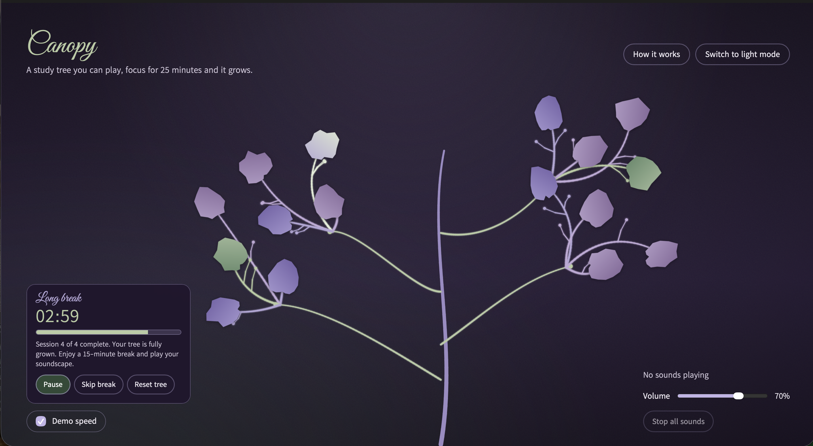

Canopy Overview
Canopy is a browser-based ambient audio instrument intended for study and focus sessions. Using the Pomodoro technique, a 25-minute timer is set when a session is commenced, during which you grow a tree, and leaves bloom, producing individual unique sounds sourced from legowelt. Click a leaf to start a loop, click it again to stop it, and layer as many sound tiles as you like over one 130-minute study cycle the user builds a soundscape that is unique to their study session.

Scenario and response
The brief I chose was scenario 5, Dynamic Soundtracker, which asks me to design a way for users to create an ongoing dynamic soundtrack suited to an environment or activity of their choice. I chose study sessions as my overall activity when studying, as a person’s attention is invested in their focus and work, so I aimed to have the input from users remain minimal, allowing time in between interactions. Canopy responds in three distinct ways, the first being the tree growing on its own as the timer runs, allowing new sound tiles to arrive without any user input. The second is the one-click input that keeps a sound tile looping for as long as the person wants, so a small input shapes the soundtrack for a long time. Lastly, the unplayed leaves remain silent on the tree, so the user can ignore the instrument while they are in focus and then interact while on a break at their own pace.
Core interactive features
Focus timer and growing tree
The study session timer runs four 25-minute focus sessions which feature 5-minute breaks, and then a final 15-minute break at the end. Each focus session equally grows one bunch of four leaves, so a full cycle grows 16. The time is measured from the clock, ensuring it stays accurate if the tab is open running in the background while a user studies. Bunching leaves together in a cluster format was deliberately done to make the growth progress more cohesively visible to users, allowing them to feel motivated to continue and fulfil the rest of the tree with leaves. The timer is also positioned in the left corner in its own card, making it distinctly visible to the user upon viewing the website.
Playable leaves
Every bloomed leaf is a toggle button, clicking it fades in a sustained note and a looping sample, and the leaf glows while it plays. This is the core interaction of my application one small action that can produce a lasting result. The leaves fade, and a glow appears around them when they are clicked, as opposed to harsh outlines, which made the leaves feel too bold and distracting for the theme of studying this design keeps them gentle for someone in intense concentration.
Automatic balance and volume
As leaves are layered, each is turned down in proportion to one over the square root of the number playing, so the mix never jumps in loudness, which would throw off the user’s focus. I have included a one volume slider and a “stop all sounds” button which help the user to have control over the overall volume when interacting with the leaf sound tiles, and the option to stop all sounds if it becomes overwhelming for them.
Phase chimes
A soft chime marks the end of a focus session, a break and the full cycle. This was added to ensure users know when to rest or return to their focus session without looking at the screen. I also included a demo speed toggle that runs the clock 60 times faster so every phase can be reviewed in about two minutes. This was to allow anyone viewing the application to understand how it works and see it visually instead of just reading the instructions, and also anyone viewing the application in a quick manner in general. I additionally placed a clickasble button/ toggle can allow users to switch between light and dark mode, following the system setting at first.
Learnibility
The line of text underneath the heading states what Canopy is in one line. Start is the only prominent control at first, and it changes colour and label as the state changes, a status line and screen reader announcements say what has happened, and the “How it works” dialog explains the instrument in four steps. The dialogue was added after peer testing showed only 4 out of 10 participants found the tree inviting to explore.
Extended technique: controlled randomness with Math.random()
Math.random() returns a pseudo-random number from 0 up to 1, and the browser chooses the seed, so the user cannot set it. Used alone, it makes noise, so I let randomness decide what happens and rules decide how much.
| Where it is used | What is random | The rule that controls it |
|---|---|---|
| Sound for each leaf | Which of 5 tiers is picked | Weights of 28, 26, 22, 16 and 8, so the rare "bell" appears least |
| Rare tier | Its chance of appearing | If 8 leaves have bloomed with no rare one, its weight is multiplied by 4 |
| Held note | Which of C4, E4, G4, D4, A4 | Weights of 30, 25, 20, 15 and 10, all from one pentatonic scale |
| Bloom times | When each leaf appears | The focus session is split into four parts, with one leaf at a random moment in each |
| Loop start | Where in the sample it begins | Anywhere in the sample, so the same sound is never heard identically twice |
| Leaf and branch form | Leaf shape, branch tilt, length and bend | Shapes stay within a teardrop outline pointing at their branch, and the tree is generated once and re-laid out on resize |
Randomness allows each session's soundscape to be personal and unrepeatable, which is what a dynamic soundtrack requires, and it gives the instrument something new to offer after each stretch of low user input. Peer testing supported this, with weighted randomness being the most meaningful of my prototypes and random timing the most engaging.
Design system
When designing the UI and UX in this final strech of the project I realised my goal was to create a calm and minimal atmosphere because this is a study tool this led to a lot of iterations and also made me take a lot of time thinking about teh appearence before coding I didn’t want the application to be boring but did not want it to be too reliant on aesthetics and UI that the functionality was lost this led me to removing unnesicary visuals like decorative particles, heavy borders and text that does not help the person take action. I also ensured I added cards and other repeated UI elements so the design felt familiar and easy to navigate.
- Colour - I used a muted palette of light lavender and sage green taken directly from my mood board for the light mode and for dark mode I used a deep purple for the background and green for headings. I made the timer sage green on a deep purple background, allowing it to be the clearest element. In light mode, the same hues are darkened to keep contrast. All colours are CSS custom properties (design tokens) in tokens.css, shared by both themes and every breakpoint.
- Typography - I used Google Fonts ‘Great Vibes’ for the headings, which adds a little whimsical element and keeps a garden theme then I used ‘Kedebideri’ for body text, and controls are clear at small sizes. Both are open-licence fonts bundled with the site.
- Spacing and shape - One spacing scale. I used small rounded buttons that behave the same in every state, and soft leaf shapes with no outline.
- Layout - The tree sits at the centre, the timer is fixed at the bottom left and the sound controls at the bottom right, and the tree layout steers around them so nothing overlaps.
| Breakpoint | Width | Layout | Leaf size |
|---|---|---|---|
| Medium | under 840px | One column, controls stacked below the tree | 58px |
| Expanded | 840 to 1199px | Tree centred, controls floating in the lower corners | 68px |
| Large | 1200 to 1600px | As Expanded, larger base text | 74px |
| Extra-large | over 1600px | As Large, largest text so big screens do not look sparse | 88px |
Accessibility
Every leaf and control is a real button that works with the keyboard and has a visible focus ring. Leaves report on or off to screen readers, the timer has a timer role, and a live region announces new leaves and phase changes. Touch point targets are at least 44px, and high-contrast colours are used in both colour themes to support low vision users.
How the community of practice shaped the design
- Concept feedback and chats with Patrick - My first concept grew a tree passively and was too hands-off. Patrick suggested making branches clickable to trigger a sound, which led to the idea of the playable leaves. In a later one-to-one he pointed me to the Legowelt sample packs, and I took photographs of plant structures to shape the tree.
- Peer testing (Week 11, 11 responses) - The central trunk layout was clearest and least cluttered, weighted randomness was the most meaningful, and random timing the most engaging. I combined those in the final design and added clearer cues, including the "How it works" pop-up button.
- Characterisation exercise (Week 12) - I chose the words creative, advanced and consistent, which led to abstract colour and repeated rounded buttons and shapes so nothing has to be re-learned.
- Button styles exercise (Week 13) - Comparing MDN, Google and W3Schools buttons made me realise that growth does not appear straight away, so the Start button needed an immediate change of state.
Credits
- Audio engine: Tone.js
- Loop samples: Legowelt Kawai K4 Sample Pack (legowelt.org, 3 December 2018). Samples are provided by Legowelt to use freely. sample-pack
- Fonts: Kedebideri and Great Vibes, SIL Open Font License, via Google Fonts
- AI assistance: Claude (Anthropic) helped build and refine the code and draft this documentation.